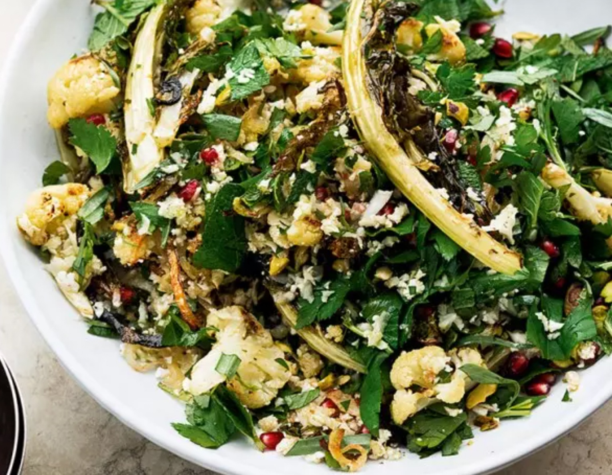

Roast Cauliflower, Pomegranate and Pistachio Salad

Description
It was a little moment of revelation, I remember, when I first combined roasted cauliflower and raw grated cauliflower in the same dish. So different from one another, but working so well combined. This is lovely as it is, served as part of a spread, or spooned alongside some roast chicken or lamb. Don’t throw away the leaves of the cauliflower here. They’re lovely to eat, roasted and crisp, or grated raw as you would the rest of the cauliflower. If you want to get ahead, roast the cauliflower up to 4–6 hours in advance. Keep at room temperature and then just combine with the remaining ingredients when ready to serve.
Serving Size: 4 beautiful people
Ingredients
- 1 large cauliflower (800g)
- 1 medium onion, roughly sliced (130g)
- 80ml olive oil
- 25g parsley, roughly chopped
- 10g mint, roughly chopped
- 10g tarragon, roughly chopped
- Seeds from ½ medium pomegranate (80g)
- 40g pistachio kernels, lightly toasted and roughly chopped
- 1 tsp ground cumin
- 1½ tbsp lemon juice
- Salt
Steps
- Preheat the oven to 200°C fan.
- Coarsely grate a third of the cauliflower and set aside in a bowl.
- Break the remaining cauliflower into florets, roughly 3cm wide, and add these to a separate bowl with the cauliflower leaves, if you have any, add onion.
- Toss everything together with 2 tablespoons of oil and ¼ teaspoon of salt, then spread out on a large parchment-lined baking tray.
- Roast for about 20 minutes, until cooked through and golden-brown. Remove from the oven and set aside to cool.
- Once cool, put the roasted vegetables into a large bowl with the 50ml oil, the grated cauliflower and the remaining ingredients, along with ¼ teaspoon of salt. Toss gently, just to combine, then transfer to a platter and serve.
Return to Home